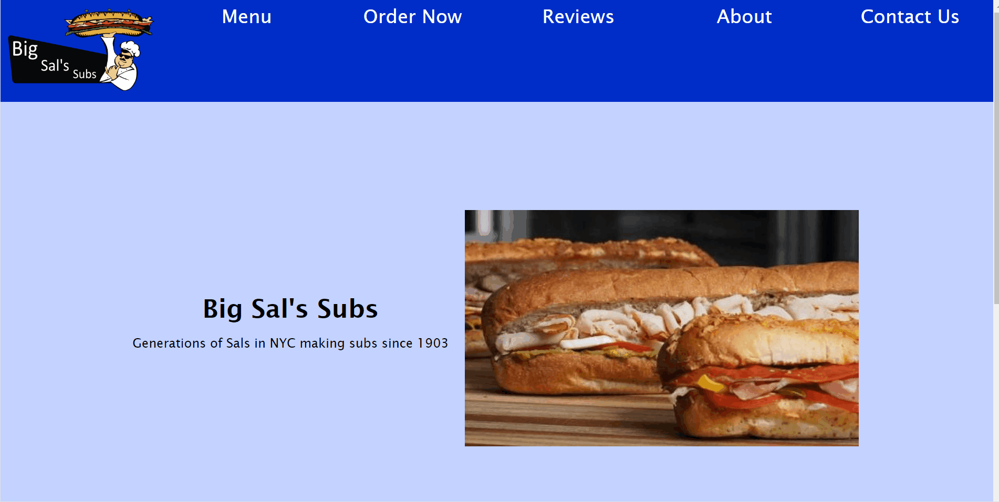

During my Web Applications course, I developed a website for a fictional business named Big Sals Subs.
View the code here
The GIF above shows how I used a database to hold review data and ring it through a slideshow. For client side form validation, the review & contact pages both provide feedback to the client if their information went through and JSON files were used to create the menu.
This was a great project for me. I loved being introduced to databases, HTML, CSS, and JavaScript. Before I only ever had three files max in all my assignments that weren't too long; however, I had over 8 files in this project with many lines of code for style, functionality, and context. I got a great understanding of how complicated code can get when organization isn't strong.
I'm not linking the website because the hosting service's free trial I used ran out.